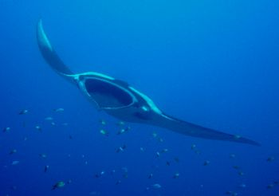

Christmas Point
Christmas Point is a dramatic series of underwater pinnacles. The best area of the site is around 24 meters where you will be in awe at the coral gardens of soft and hard coral variety. The dive comes to an end close to the island with exciting tunnels formed by large rock formations. The current brings big pelagic such as manta rays, leopard sharks, & reef sharks to this site.

Back